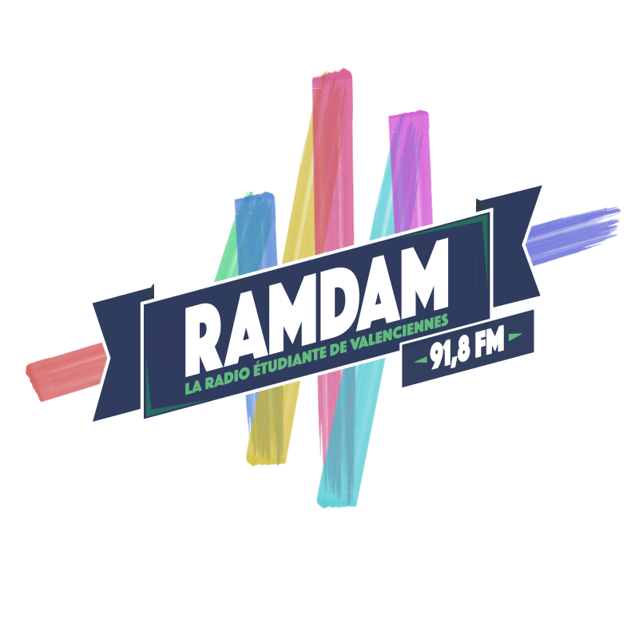
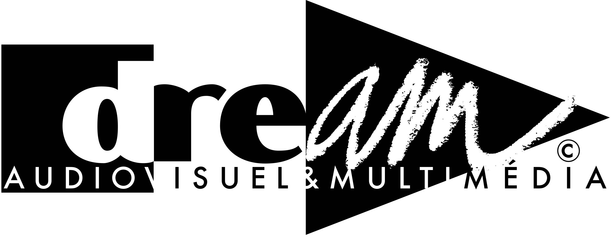

Curriculum vitae
Le Fresnoy - Pôle son - Stage
Festival du Cinéma International en Abitibi-Témiscamingue - Design sonore de capsules vidéos
Rencontres Audiovisuelles - Loom Prod - Stage
Ramdam - Radio étudiante de Valenciennes - Responsable événementiel
Baccalauréat S mentions européenne et très bien
DREAM - Licence 1 Science et Technique parcours type Audiovisuel et médias numériques
UQAT - 2e année du Baccalauréat en Création Numérique
DREAM - Licence 3 Science et Technique parcours type Audiovisuel et médias numériques
Bases en C, C++, Scala et suite Microsoft Office
Prise de son, mixage son (Stéréo, 5.1), sonorisation (conférence, émission radio)
AVID ProTools, Adobe Audition, FL Studio, iZotope RX 4 à 7
AVID Media Composer, Adobe Premiere Pro, Photoshop, Illustrator et After Effects
Parlé couramment - B2 - Certification CLES2
Parlé occasionnellement - Niveau Bac LV2 (A2)
Parlé occasionnellement - Niveau Bac LV3 (A2)